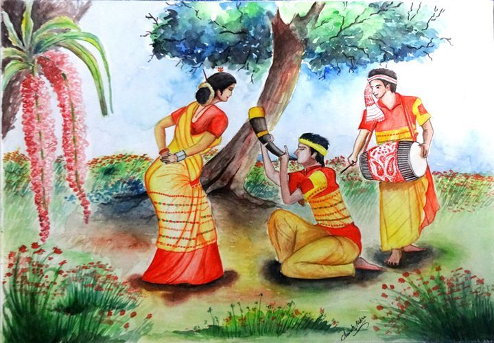

This isn’t just a dance—it’s a ritual of attraction and youth. The painting captures that charged moment where glances linger a little longer, where movement becomes communication. The red mekhela chador worn by women symbolizes passion, while the rhythmic swirl of bodies reflects a collective heartbeat. It’s almost like the entire village is in sync—celebrating not just spring, but human connection, fertility, and desire.
Bihu dates back to agrarian traditions of Assam, where communities celebrated harvest cycles and seasonal transitions. Over time, especially during colonial India, such folk representations became a way of preserving Assamese identityagainst cultural dilution. Paintings of Bihu gained prominence in the 20th century when regional art began being documented and showcased.
Rhythmic Composition: Figures arranged in circular/flowing motion to mimic dance Color Symbolism: • Red → energy, love, fertility • Yellow → harvest, prosperity Flat Perspective: No deep realism—focus is on storytelling Textile Detailing: Patterns inspired by Assamese weaving traditions Dynamic Lines: Curved lines emphasize motion and music
Most Bihu paintings are rooted in folk traditions, meaning they belong to the community rather than a single artist. However, artists like Hemen Majumdar indirectly influenced how emotion and human expression are portrayed in modern Assamese art. Folk artists focus more on collective identity than individual fame.